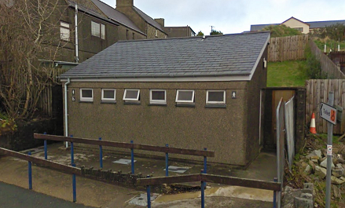

(Geschlossen) - Öffentliche
Annehmlichkeiten

Die öffentlichen Annehmlichkeiten von Llithfaen sind derzeit gesperrt und heruntergefahren.
Die befinden sich gegenüber der lokalen Taverne
Koordinaten: 9.5464564 -0.5223452435. Altitide 865 ft